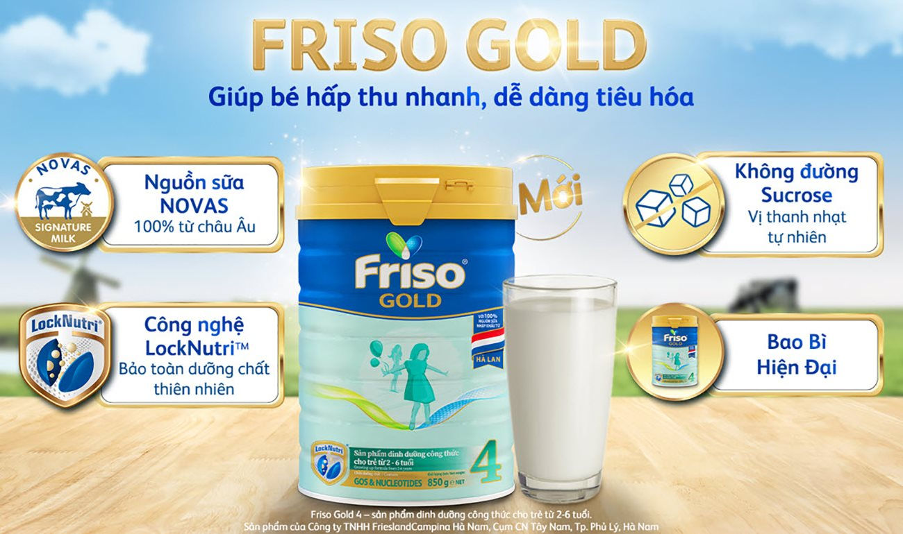

Dưới đây là tất cả các Thương hiệu của các sản phẩm sữa bột nổi tiếng trên thế giới vói đầy đủ
thông tin của thương hiệu cũng như nơi xuất xứ của các sản phẩm sữa bột có trong trang web

Mead Johnson
Mead Johnson là một trong những công ty đầu tiên tại Hoa Kỳ tập trung vào nghiên cứu khoa học
dinh dưỡng cho trẻ sơ sinh và trẻ nhỏ. Bắt đầu từ việc muốn tìm một giải pháp dinh dưỡng cho con
trai vốn gặp vấn đề khi dung nạp sản phẩm dinh dưỡng thông thường, ông Mead Johnson đã thực hiện
các nghiên cứu với mong muốn góp phần cải thiện thực trạng dinh dưỡng ở trẻ sơ sinh. Ngày nay,
Mead Johnson là công ty dẫn đầu về nghiên cứu dinh dưỡng nhi khoa hoạt động vì những lợi ích của
những thế hệ tương lai trong các lĩnh vực quan trọng như sự phát triển trí não và miễn dịch tự
nhiên. Vì trẻ em xứng đáng nhận những điều tốt đẹp nhất, Mead Johnson luôn mang lại những sản
phẩm chất lượng và an toàn cho trẻ.
Lịch sử phát triển của Mead Johnson
- Từ năm 1900 - 1909: Mead Johnson được xây dựng dựa trên nền tảng dinh dưỡng khoa học, là một
trong những công ty đầu tiên tại Hoa Kỳ tập trung vào nghiên cứu khoa học dinh dưỡng cho trẻ sơ
sinh và trẻ nhỏ.
- Năm 1910 - 1919: Mead Johnson giới thiệu Dextrilactic, sữa bột đầu tiên dành cho trẻ sơ sinh.
- Năm 1930 - 1939: Ra mắt sản phẩm đột phá, bột ngũ cốc Pablum cho trẻ em và sản phẩm sữa Olac
sử dụng dầu thực vật thay cho chất béo động vật.
- Năm 1940 - 1949: Giới thiệu vitamin hòa tan dành cho trẻ em đầu tiên với tên gọi Vi - Sols.
- Năm 1959 - 1959: Ra mắt những sản phẩm Enfamin đầu tiên, là loại sữa bột hàng ngày đầu tiên
được thiết kế theo các thành phần dinh dưỡng của sữa mẹ.
- Năm 2009: Sữa bột Enfamin Premium với 3 vòng bảo vệ được giới thiệu ở Hoa Kỳ để tối ưu sự
phát triển trí não và thị giác.
- Năm 2010: Giới thiệu Enfamin hộp bao bì đóng gói thân thiện với môi trường.
- Ngày nay, với trên 70 loại sản phẩm trên hơn 50 quốc gia, Mead Johnson được hàng triệu bậc
cha mẹ và chuyên gia chăm sóc sức khỏe trên toàn thế giới tin dùng.
Các dòng sản phẩm của Mead Johnson
+Sữa Enfagrow A+ 360 Brain DHA+ và MFGM Pro: tăng thêm
40% hàm lượng DHA, hỗ trợ sự phát triển vượt trội của trí não trong giai đoạn này. Với 3 ly mỗi
ngày, bé sẽ được cung cấp tới 105mg DHA - chuẩn hàm lượng khuyến nghị của FAO/WHO. Sữa còn có
hàm lượng MFGM cao. MFGM là một màng giàu dinh dưỡng bao quanh giọt chất béo được bài tiết vào
sữa, được chứng minh đóng vai trò quan trọng trong việc cải thiện chức năng nhận thức của bé.
Việc kết hợp giữa DHA và MFGM có khả năng giúp gia tăng sự kết nối giữa các tế bào não so với
việc chỉ bổ sung DHA riêng lẻ.
+
Sữa Enfamama A+ 360 Brain Plus: có hàm lượng DHA cao
(100mg/2 ly sữa). DHA là thành phần chính giúp hình thành cấu trúc và chức năng của bộ não suốt
3 tháng cuối thai kỳ và sau khi sinh. Người mẹ được khuyến nghị bổ sung DHA mỗi ngày trong giai
đoạn mang thai và cho con bú để giúp trẻ phát triển thị giác và chức năng nhận thức. Sữa chứa
hàm lượng Choline đạt chuẩn khuyến nghị của chuyên gia, hỗ trợ phát triển não bộ, giúp tổng hợp
acetylcholine là chất dẫn truyền thần kinh quan trọng liên quan đến trí nhớ và khả năng học hỏi
sau này.
+
Sữa Enfamil A+ LactoFree Care: cung cấp cho bé đạm và
năng lượng thích hợp cũng như các vitamin và khoáng chất cần thiết hỗ trợ cho sự phát triển thể
chất toàn diện của bé, cung cấp hàm lượng cao Canxi, vitamin D, Phốt pho và Magie giúp răng và
xương chắc khỏe. Enfamil A+ LactoFree Care cho hiệu quả bảo vệ 3 chiều nhờ hệ dưỡng chất độc đáo
gồm DHA & ARA, các vitamin & khoáng chất và các chất chống oxy hóa, giúp tăng cường sức đề kháng
cho trẻ nhỏ.
Priso
- Friso là một trong những thương hiệu sữa hàng đầu tại Hà Lan, trực thuộc tập đoàn thực phẩm
FrieslandCampina, với hơn 140 kinh nghiệm hoạt động trên toàn thế giới. Từ những nghiên cứu và
tìm hiểu quá trình phát triển, tăng trưởng tự nhiên mà bé có được do nguồn dinh dưỡng từ sữa mẹ,
Friso đã cho ra đời các sản phẩm dinh dưỡng cao cấp với công thức độc đáo, cân đối những dưỡng
chất cần thiết, đáp ứng trọn vẹn nhu cầu dinh dưỡng theo từng giai đoạn phát triển của trẻ.
Friso được kiểm định tiếu chuẩn chất lượng nghiêm ngặt, cung cấp đầy đủ các dưỡng chất, phù hợp
với từng giai đoạn phát triển khác nhau của bé. Những dòng sản phẩm nổi tiếng của Friso được các
bà mẹ tin dùng như Frisomum, Frisolac Gold, Friso Gold.
Lịch sử phát triển của Friso
Friso được biết đến là thương hiệu sản phẩm của công ty FrieslandCampina, một công ty với lịch
sử phát triển hơn 130 năm đầy uy tín.
- Năm 1871, chính từ những đàn bò sữa giống Friesland và những cánh đồng cỏ tươi ở vùng Campina,
người nông dân Hà Lan đã xây dựng nên thương hiệu Royal Friesland Foods.
- Tháng 12/2008, Royal Friesland Foods, sáp nhập cùng Campina và chính thức tạo nên thương hiệu
FrieslandCampina.
- Công trình xây lắp, tạo lập và gìn giữ giá trị truyền thống vẫn ngày càng tiếp diễn. Ở các thị
trường nơi FrieslandCampina hoạt động và sản xuất, tập đoàn vẫn miệt mài xây dựng nền móng cho
sự phát triển.
Các dòng sản phẩm của thương hiệu Friso
-
Sữa Frisomum Gold: Sản phẩm đặc biệt dành cho bà mẹ mang thai và cho con bú,
mang tới cho mẹ một hệ dưỡng chất đầy đủ nhất đáp ứng sự phát triển của thai nhi. Đặc biệt, sữa
bổ sung hàm lượng sắt cao giúp mẹ khỏe mạnh, mang đến cho thai nhi những dinh dưỡng tốt nhất.
Điểm nổi bật nhất của sữa Frisomum Gold và các dòng Friso khác phải kể đến, đó chính là hệ dưỡng
chất Synbiotics: sự kết hợp của Prebiotics FOS và Probiotics (Bifidobacterium BB-12®,
Lactobacillus casei CRL-431®), giúp tăng cường chức năng bảo vệ của màng nhầy ruột, ngăn ngừa vi
khuẩn xấu bám vào thành ruột.
-
Sữa Frisolac Gold: được sản xuất trên công nghệ tiên tiến LockNutri giúp bảo vệ
chất dinh dưỡng tự nhiên không bị mất đi do nhiệt và vẫn giữ lại trạng thái tự nhiên nhất. Từ
đó, các chất dinh dưỡng trong sữa, đặc biệt là đạm sữa sẽ dễ dàng tiêu hóa và hấp thu hơn đối
với bé. Frisolac Gold cung cấp nguồn năng lượng dồi dào cho bé nhờ lượng đạm, chất béo,
carbonhydate và các vitamin cân đối, xây dựng hệ dinh dưỡng cân bằng giúp bé luôn khỏe mạnh để
thực hiện các hoạt động vui chơi khám phá mỗi ngày.
-
Sữa Friso Gold Pedia: dành cho trẻ biếng ăn giai đoạn từ 2 - 6 tuổi, cung cấp
đến 80% nhu cầu dinh dưỡng trong ngày cho bé chỉ với 2 ly sữa. Sữa bột cho bé giàu vitamin và
khoáng chất cùng lượng calo tương ứng, đáp ứng sự thiếu hụt vi chất thường thấy ở trẻ em trong
giai đoạn này, theo Nhu cầu dinh dưỡng khuyến nghị cho người Việt Nam.
Abott
Được thành lập từ năm 1888, Abbott công ty chăm sóc sức khỏe hàng đầu thế giới, chuyên nghiên
cứu, phát triển, sản xuất và đưa ra các sản phẩm và dịch vụ chăm sóc sức khỏe có chất lượng cao
trong lĩnh vực dinh dưỡng, dược phẩm, thiết bị chẩn đoán và điều trị.
Với hiểu biết sâu sắc về khoa học dinh dưỡng và các nhu cầu trong cuộc sống, Abbott luôn tiên
phong trong lĩnh vực dinh dưỡng và chăm sóc sức khỏe nhằm nâng cao chất lượng cuộc sống. Các sản
phẩm dinh dưỡng của Abbott dành cho trẻ em, người lớn tuổi cũng như chăm sóc sức khỏe nằm trong
số các nhãn hiệu được tin cậy nhất trên thế giới.
Lịch sử phát triển
Được thành lập từ năm 1888, Abbott công ty chăm sóc sức khỏe hàng đầu thế giới, chuyên nghiên
cứu, phát triển, sản xuất và đưa ra các sản phẩm, dịch vụ chăm sóc sức khỏe, có chất lượng cao
trong lĩnh vực dinh dưỡng, dược phẩm, thiết bị chẩn đoán và điều trị. Với hơn 80 năm, Abbott
Dinh dưỡng (Abbott Nutrition) đã được công nhận là một trong những tên tuổi uy tín nhất thế giới
về các sản phẩm dinh dưỡng. Các chuyên gia chăm sóc sức khỏe và người tiêu dùng tìm đến công ty
để tìm ra những giải pháp sức khỏe, vì những mối quan hệ hợp tác cùng nhau phát triển để hướng
tới một cuộc sống tốt đẹp hơn.
Vinamilk
Công ty được Sở Kế hoạch - Đầu tư tỉnh Tuyên Quang cấp Giấy chứng nhận đăng ký kinh doanh lần
đầu tiên vào ngày 14/12/2006. Ngành nghề hoạt động của Công ty khá đa dạng, gồm: Chăn nuôi bò
sữa; Trồng trọt và chăn nuôi hỗn hợp; Sản xuất thức ăn gia súc, gia cầm và thủy sản; Bán buôn
nông, lâm sản nguyên liệu và động vật sống; Đại lý (tinh bò, thuốc thú y, thức ăn gia súc, …).
Ban đầu, trang trại có tổng đàn bò sữa khoảng 1.400 con với tổng số lao động là 92 người, trụ sở
được đặt tại: Thôn Đát Khế, Xã Phú Lâm, Huyện Yên Sơn, Tỉnh Tuyên Quang. Đến nay, vốn điều lệ
của Công ty đã lên đến 1.550 tỷ đồng với tổng số CB-CNV lên đến 480 người. Điều này cho thấy sự
trưởng thành đáng khích lệ của đơn vị sau 8 năm nỗ lực thực hiện nhiệm vụ.
Lịch sử phát triển
Ngày 20/08/1976, Vinamilk được thành lập dựa trên cơ sở tiếp quản 3 nhà máy sữa do chế độ cũ
để lại, gồm :
- Nhà máy sữa Thống Nhất (tiền thân là nhà máy Foremost).
- Nhà máy sữa Trường Thọ (tiền thân là nhà máy Cosuvina).
- Nhà máy sữa Bột Dielac (tiền thân là nhà máy sữa bột Nestle') ( Thụy Sỹ).
Đến năm 2000 công ty đã trở thành công ty niêm yết lớn nhất thế giới và là công ty hàng tiêu dùng nhanh duy nhất của Việt Nam lọt vào danh sách này, với doanh thu và vốn hóa lần lượt là 2,1 tỷ USD và 9,1 tỷ USD.
Đến năm 2020 Vinamilk chính thức sở hữu 75% vốn điều lệ của Công ty Cổ phần GTNfoods, đồng nghĩa với việc Công ty Cổ phần Giống Bò Sữa Mộc Châu chính thức trở thành một đơn vị thành viên của Vinamilk.